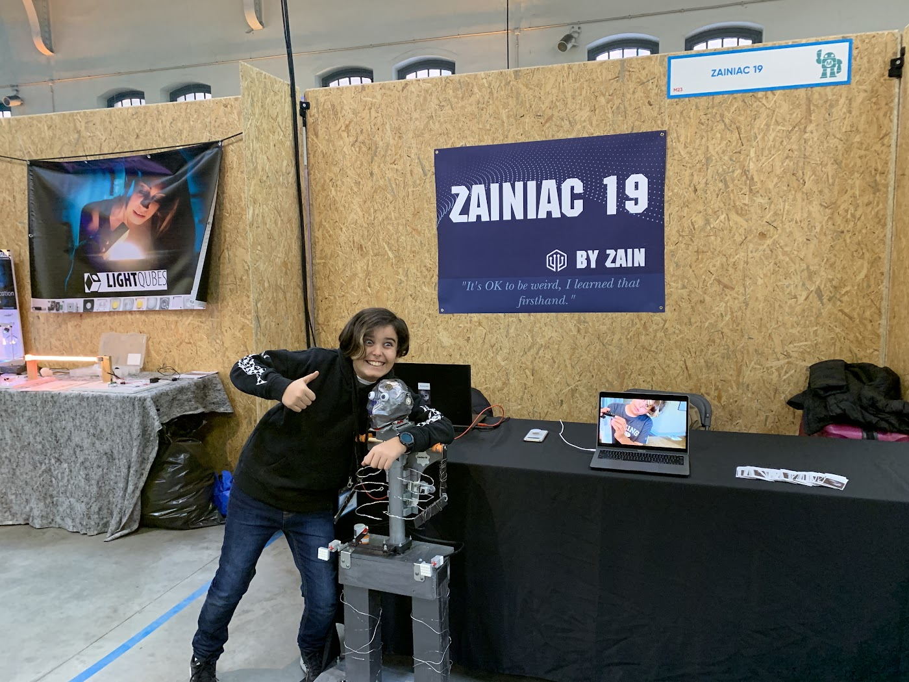

About, Skills & Resume
Engineering & robotics student, junior firefighter at Station 46, and aspiring mechanical engineer.
Skills & Platforms
CAD & Fabrication
- Onshape
- Fusion 360
- FDM 3D Printing
- LEGO Mindstorms
- VEX V5
- Servo Linkages
Programming
- Python
- Java
- JavaScript
- C++
- Arduino
Systems & Web
- Raspberry Pi
- Hardware Integration
- Web Development
- Google Antigravity
Leadership
- Co-Pres, Robotics Club
- Co-Pres, Maker Club
- Co-Pres, MSA
- Junior Firefighter
Internships, Research & Work
Built the Station 46 radio room Raspberry Pi digital dashboard, engineered its 3D-printed 11-inch wall enclosure in CAD, and led the public website redesign.
Built SAT score tracking, AI-assisted study recommendations, and College Board flashcard tools using JavaScript, Java, C++, and Google Antigravity.
Conducted hands-on scientific research and reconstructed electromechanical experiments as part of the Joseph Henry Project.
Active Junior Firefighter leading the redesign of the department’s junior onboarding & mentorship program, while working part-time at True Value Hardware.
Articles
Recognition

Presented Zainiac 19 on national broadcast news and was invited to the official opening ceremony with Brussels government leadership.
VEX V5 Quarterfinalist (2026), 6th Place (2025), and PSAT National Recognition Award recipient.